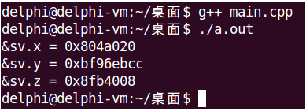

C++新增加了引用的概念：
Type &name = var;int a = 4;
int &b = a; //b为a的别名
b = 5; //操作b就是操作aType &name <==> Type *const name#include <cstdio>
struct TRef
{
char &r;
};
int main(int argc, char *argv[])
{
char c = 'c';
char &rc = c;
TRef ref = { c };
printf("sizeof(rc) = %d\n", sizeof(rc));
printf("sizeof(TRef) = %d\n", sizeof(TRef));
printf("sizeof(ref) = %d\n", sizeof(ref));
printf("sizeof(ref.r) = %d\n", sizeof(ref.r));
/*sizeof(type &)的大小，就是type类型的大小*/
printf("sizeof(char &) = %d\n", sizeof(char &));
printf("sizeof(int &) = %d\n", sizeof(int &));
printf("sizeof(double &) = %d\n", sizeof(double &));
return 0;
}#include <stdio.h>
struct TRef
{
char *before;
char &ref;
char *after;
};
int main(int argc, char *argv[])
{
char a = 'a';
char &b = a;
char c = 'c';
TRef r = {&a, b, &c};
printf("sizeof(r) = %d\n", sizeof(r));
printf("sizeof(r.before) = %d\n", sizeof(r.before));
printf("sizeof(r.after) = %d\n", sizeof(r.after));
printf("&r.before = %p\n", &r.before);
printf("&r.after = %p\n", &r.after);
return 0;
}注意：由于引用的内部实现为指针，因此函数不能返回非静态局部变量的引用
#include <stdio.h>
int &demo()
{
int d = 0;
printf("demo: d = %d\n", d);
return d;
}
int &func()
{
static int s = 0;
printf("func: s = %d\n", s);
return s;
}
int main(int argc, char *argv[])
{
int &rd = demo();
int &rs = func();
printf("\n");
printf("main: rd = %d\n", rd);
printf("main: rs = %d\n", rs);
printf("\n");
rd = 10;
rs = 11;
demo();
func();
printf("\n");
printf("main: rd = %d\n", rd);
printf("main: rs = %d\n", rs);
printf("\n");
return 0;
}const Type &name = varconst引用类型 VS 初始化变量类型
注意：const只是修饰符，不代表类型，也就是说，const int和int是相同类型。
#include <stdio.h>
int main()
{
const int a = 3;
int b = 4;
char c = 'c';
const int &ra = a;
const int &rb = b;
const int &rc = c;
const int &rd = 1;
int *p1 = (int *)&ra;
int *p2 = (int *)&rb;
int *p3 = (int *)&rc;
int *p4 = (int *)&rd;
*p1 = 5;
*p2 = 6;
*p3 = 7;
*p4 = 8;
printf("ra = %d\n", ra);
printf("rb = %d\n", rb);
printf("rc = %d\n", rc);
printf("rd = %d\n", rd);
printf("\n");
printf("b = %d\n", b); //b的类型和rb相同，rb引用的就是b，所以改变rb的值，b也跟着一起改变
printf("c = %c\n", c); //c的类型和rc不同，rb引用的是c的临时对象，所以改变rc的值，c不受影响
return 0;
}| 指针 | 引用 |
|---|---|
| 指针是一个变量，其值为一个内存地址 | 引用是一个变量的新名字 |
| 指针可以不初始化，而是在使用时赋值 | 引用必须在定义时初始化 |
| 通过指针可以访问对应内存地址中的值 | 对引用的操作（赋值、取地址等）会传递到代表的变量上 |
| 指针可以保存不同的地址 | 引用在初始化之后无法代表其他变量 |
| 指针可以被const修饰，成为常量或只读变量 | const引用使其代表的变量具有只读属性 |
在工程项目开发中
我们给出一个站在C++编译器的角度看待引用的示例，下面这段代码有问题吗？
int a = 1;
int b = 2;
int *pc = new int(3);
int &array[] = {a, b, *pc};#include <stdio.h>
int a = 1;
struct SV
{
int &x;
int &y;
int &z;
};
int main()
{
int b = 2;
int *c = new int(3);
SV sv = {a, b, *c};
int &array[] = {a, b, *c}; //&array[1] - &array[0] != 4，编译报错
printf("&sv.x = %p\n", &sv.x);
printf("&sv.y = %p\n", &sv.y);
printf("&sv.z = %p\n", &sv.z);
delete c;
return 0;
}首先，注释掉代码第17行，编译运行结果如下，可以看出打印出的内存地址是各不相同的。

然后，去除代码第17行注释，结果编译报错，原因就是数组的三个元素地址不连续，而是各不相同。